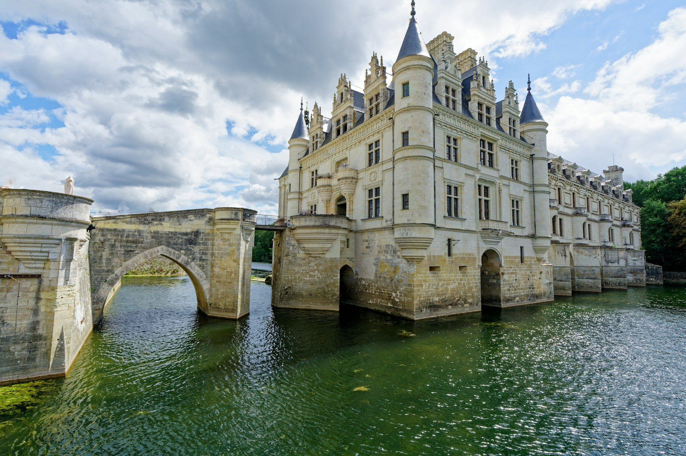

Visiter les châteaux de la Loire
Chambord, Chenonceau, Amboise et Villandry : les grands châteaux de la Renaissance, à deux heures de Paris.
Photo : Colin Watts / Unsplash
La vallée de la Loire, inscrite au patrimoine mondial de l’Unesco, rassemble les plus beaux châteaux de la Renaissance : Chambord, le plus grand, Chenonceau bâti sur le Cher, Amboise et le Clos Lucé de Léonard de Vinci, Villandry et ses jardins. Tours, Amboise et Blois sont à 1 h à 2 h de Paris en train.
En hiver, la plupart des châteaux restent ouverts et se parent de décors de Noël de fin novembre à début janvier. Chaque guide donne les horaires, les prix 2026, l’accès et nos conseils.
Que voir dans la vallée de la Loire
-
 Château de Chambord
Château de ChambordLe plus grand château de la Loire, son escalier à double révolution et ses terrasses.
-
 Château de Chenonceau
Château de ChenonceauLe château bâti en arches sur le Cher, sa grande galerie et les jardins de Diane.
-
 Amboise et le Clos Lucé
Amboise et le Clos LucéLe château royal où repose Léonard de Vinci et le Clos Lucé, sa dernière demeure.
-
 Château de Villandry
Château de VillandryLes plus beaux jardins de la Loire : potager décoratif, buis taillés et labyrinthe.